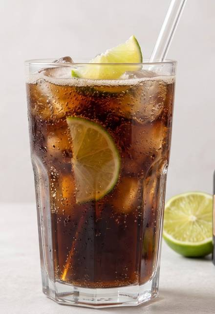
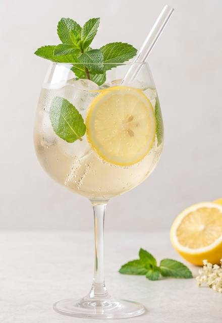
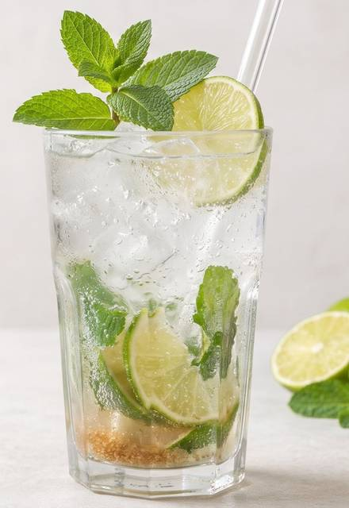
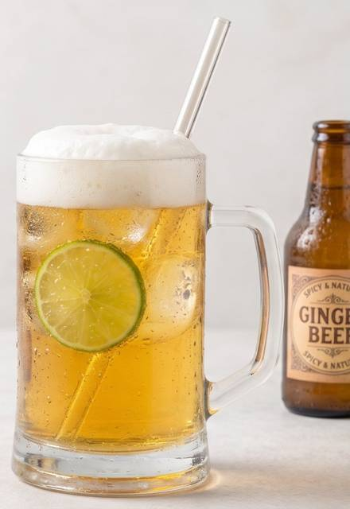
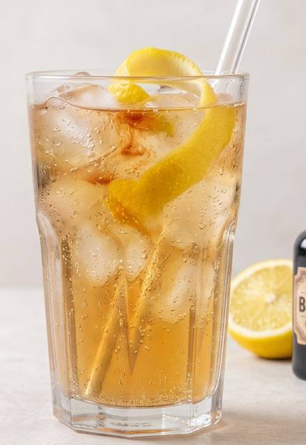

Alkoholfreie Alternativen
Alkoholfreie Drinks & Cocktails
18 einfache Rezepte ohne Alkohol, gemixt mit Zutaten aus dem Supermarkt. Perfekt für den Dry January und jeden Abend, an dem du klar bleiben willst.

Crodino Spritz
Bitter-fruchtig und so schön orange wie das Original.

Grapefruit-Tonic
Herb, spritzig und mit einem Hauch Rosmarin.

Cola mit Bitters
Die Cola für Erwachsene: würzig und weniger süß im Abgang.

Ginger Mule
Scharf, frisch und eiskalt, gern im Kupferbecher.

Gurken-Minz-Tonic
Leicht, grün und unglaublich erfrischend.

Espresso Tonic
Bitter trifft spritzig, perfekt für den Nachmittag.

Holunder-Spritz
Wie ein Hugo, nur ohne Prosecco.

Virgin Mojito
Limette, Minze, Rohrzucker: mehr braucht es nicht.

Granatapfel-Tonic
Fruchtig-herb und mit toller Farbe.

Hibiskus-Eistee
Säuerlich, tiefrot und ganz ohne Zucker.

Michelada ohne
Würzig, salzig, herzhaft: der Bier-Cocktail aus Mexiko.

Preiselbeer-Ginger
Fruchtig-scharf, ideal für kalte Abende.

Rosmarin-Zitrone
Hausgemachte Limo mit Kräuter-Note.

Ingwer-Kombucha-Orange
Prickelnd, leicht säuerlich und gut für den Bauch.

Apfel-Zimt-Spritz
Schmeckt nach Herbst und Bratapfel.

Ginger-Beer-Shandy
Halb Helles, halb Ginger Beer: das Radler mit Biss.

Diesel ohne
Weizen trifft Cola, der Klassiker, alkoholfrei.

Ginger-Ale-Highball
Klar, kühl und mit feiner Würze.